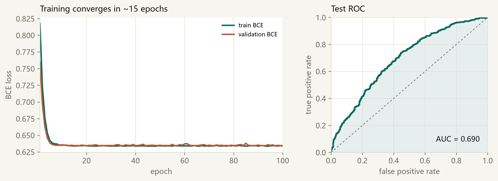
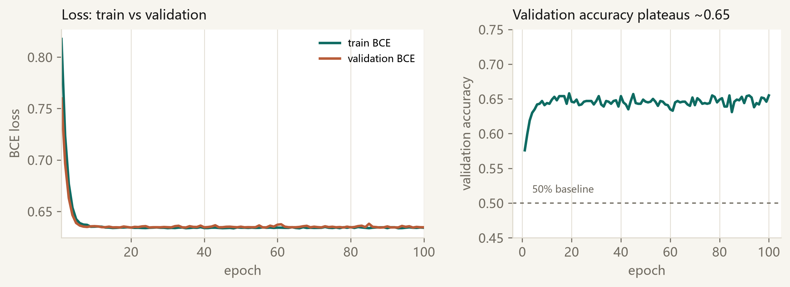

01 / MODEL模型线
从一张表到可解释的概率
- 01数据与清洗47 → 44；缺失、日期、类别编码
- 02逻辑回归logit → sigmoid → BCE；L1/L2
- 03训练Dataset / DataLoader；AdamW 100 epochs
- 04评估混淆矩阵、F1、ROC-AUC、阈值
Orientation
这不是两门课，而是一条实验的两条线：模型线回答“怎么跑通”，工程线回答“怎么证明它真的跑对了”。
从一张表到可解释的概率
从一句任务到可验收的交付
本页怎么用
先读地图和六个数字；遇到公式停一下，在纸上手算一条样本；最后用阈值滑块和验收清单，把“跑通”变成“可证明”。
Data / 01
先看账本，再背数字。47 减掉 id、标签和 subGrade，剩下的 44 维才是模型真正看到的世界。
验证集用来选模型；测试集只在最后看一次。1000 条测试的准确率标准误约 1.5 个百分点。
COLUMN LEDGER
id唯一标识，对预测无贡献isDefault标签，不能当输入subGrade与 grade 冗余DATA HEALTH
缺失最多：n11（624）、employmentLength（518）、n0–n14 多数 325。
三个口径冲突
PPT 说“2000 测试”，实际是 8000/1000/1000；grade 实际有 A–G 7 级；“42 + 5 + 15”对不上 47。统一以列账本为准：47 − id − 标签 − subGrade = 44。
CLEANING
issueDate 转成距最早日期的天数；earliesCreditLine 转成月数；grade 用 A=1 … G=7 的序数编码；employmentLength 按 <1→1、10+→12、n→n+1 映射。
顺序不能反：先在原始字符串上转换，最后 astype(float)。日期基准也按 split 各自取最早；严格做法是 train-only。
MISSING
train 5595 / val 734 / test 968 个缺失单元，集中在 n0–n14、employmentLength 和 n11。先 filter_NA 删标签缺失行，再 fill_mean 填输入特征。
严格做法是只用 train 均值；原手册按 split 各自求均值，报告里要指出这个差异。
Batching / 02
Dataset 定义“第 i 条是什么”；DataLoader 负责切 batch、打乱和并行加载。
class MyDataset(Dataset):
def __init__(self, *tensors):
assert all(t.size(0) == tensors[0].size(0)
for t in tensors)
self.tensor = tensors
def __len__(self):
return self.tensor[0].size(0)
def __getitem__(self, index):
return tuple(t[index] for t in self.tensor)generator = torch.Generator()
generator.manual_seed(42)
train_loader = DataLoader(
MyDataset(X_train, y_train),
batch_size=64, shuffle=True,
generator=generator)
val_loader = DataLoader(
MyDataset(X_val, y_val),
batch_size=64, shuffle=False)INTERACTIVE / BATCH CALCULATOR
改一改样本数和 batch size，看向上取整后的 batch 数与最后一批大小。
\(\text{batches}=\lceil N / B\rceil\)
1000 = 15 × 64 + 40
shuffle=True 只给 train。验证/测试保持顺序，指标才可对齐。
独立 generator。DataLoader 每次 iter() 都消耗全局 RNG；独立 generator 才能让 notebook 与脚本逐位一致。
末批不是整批。train 125 批末批 64；val/test 16 批末批 40。
Model / 03
线性分数负责“打分”，sigmoid 负责“变成概率”，BCE 负责“为自信且错误重罚”。
\(w\) 是每个特征的权重，\(b\) 是偏置。分数无界。
把任意分数压到 \((0,1)\)；\(z=0\) 时 \(p=0.5\)。
伯努利分布的负对数似然；对“自信且错误”惩罚急剧增大。
L1 稀疏，L2 收缩。本实验用 L1 + norm_weight=0.005；34/44 个权重≈0。
class LogisticRegression(nn.Module):
def __init__(self, input_dim, norm='l1'):
super().__init__()
self.w = nn.Parameter(torch.randn(input_dim, 1))
self.b = nn.Parameter(torch.randn(1))
self.norm = norm
def forward(self, x):
return torch.sigmoid(x @ self.w + self.b)SHAPE CHECK
x(N, 44)x @ w + b(N, 1)sigmoid(N, 1)BCE 前 flatten(N,)参数量：44 × 1 + 1 = 45。模型很小，瓶颈更可能在特征。
p (N,1) 与 y (N,) 直接送 BCELoss 会广播成 (N,N)；先 view(-1)。
sigmoid 饱和后 log(0) 会变 -inf；概率 clamp 到 [1e-7, 1-1e-7]。
总损失 \(L_{\text{total}}=\mathrm{BCE}+\lambda R(w)\)；不要把范数当 loss 直接相加还忘了 λ。
Training / 04
训练不是“跑起来”，而是每一步都知道为什么：清梯度、前向、损失、反向、更新。
CONFIG
| optimizer | AdamW |
|---|---|
| lr | 0.005 |
| epochs | 100 |
| batch | 64 |
| norm | L1, 0.005 |
| threshold | 0.5 |
| seed | 42 |
AdamW 默认 weight_decay=0.01，相当于额外 L2；知道它存在，调正则时才不会混淆。实际验证环境：Python 3.11.9 + torch 2.14.1+cpu；手册不严格限制版本，能 import 即可。
for xb, yb in train_loader:
opt.zero_grad() # 1 清空梯度
p = model(xb) # 2 前向
loss = criterion(p, yb) \
+ 0.005 * model.normnize() # 3 损失
loss.backward() # 4 反向
opt.step() # 5 更新model.eval() + torch.no_grad()跑验证集，算 loss / accuracy。冒烟测试
先跑 5 个 epoch。验证 Accuracy 约 0.63、AUC 约 0.69；如果 loss 不降或 NaN，先查形状、dtype、clamp，不要急着调学习率。
模板里的三个小问题
先验证后训练；val_input / val_label 覆盖外层变量；每个 batch 新建 loss_fn。建议先训练后验证，内层用 xb / yb。
Evaluation / 05
50% 是基线；1000 条测试的准确率标准误约 1.5 个百分点。把混淆矩阵、F1 与 AUC 放在一起看。
INTERACTIVE / THRESHOLD
AUC 与阈值无关；阈值升高通常 precision↑、recall↓。数据来自本实验 1000 条测试集。
RESULT TABLE
| 数据 | Acc | Prec | Recall | F1 | AUC |
|---|---|---|---|---|---|
| train 8000 | 0.6446 | 0.6453 | 0.6442 | 0.6448 | 0.7005 |
| val 1000 | 0.6550 | 0.6606 | 0.6515 | 0.6560 | 0.6969 |
| test 1000 | 0.6350 | 0.6278 | 0.6265 | 0.6272 | 0.6897 |


不要把 0.635 包装成“很好”
50% 是基线；sklearn 线性基线 AUC 0.692、HGB 0.695。0.635 比基线好，但特征信息量有限，不要过度解释 1% 的差异。
Agentic / 06
它是“模型 + 工具 + 循环”，而 Harness 决定这个循环能不能看、能不能做、能不能记、能不能验收。
CLASSIC → LLM
AIMA 第 2 章把 agent 放在环境里：传感器感知、执行器行动、理性地最大化性能度量。Wooldridge & Jennings 给出软件版本：自主、交互、感知、主动。它们都不要求神经网络。
ReAct（2022）把“想一步”和“做一步”交错：观察 → 决策 → 工具 → 反馈。今天的 coding agent 仍是这个骨架。
Context 不是越多越好
上下文越长，模型对其中信息的准确召回越弱（context rot）；压缩、笔记、子 agent 是三种常用策略。Prompt 拿不到新信息、不能保证执行、不能自证正确——这些要靠 Context 与 Harness 补。
只能看到一段文本，只能回答；完成与否由你说了算。
能看到工作区、改文件、跑命令；但它说自己完成，不等于真的完成。
能看到手册、历史、报错；有权限边界与追溯；测试、自检、日志三方对上。
ACI 证据：SWE-agent（2024）表明，为 agent 专门设计的工具接口会直接影响它编辑代码、浏览仓库和执行测试的表现。接口不是装饰，是能力的一部分。
INTERACTIVE / PROMPT BUILDER
提示：先让 Agent 复述验收标准，再让它动手。
# AGENTS.md
## 项目
逻辑回归实验：notebook + utils.py + data/。
## 命令
- 训练：python run_experiment.py
- 自检：python verify_submission.py
## 边界
- 只读 data/ 与 source_materials/；只写 outputs/ 与 logreg_lab/。
- 不改 utils.py 的预处理；不改数据划分；seed 固定 42。
- 任何“已完成”必须附命令、指标和文件路径。文件不是机制
AGENTS.md / GOAL.md 只是上下文与指令的载体；Harness 决定何时读、读了算不算数。DSH 的 /goal 是运行时状态，不是某个 Markdown 文件。
验收必须外部化：测试、指标、日志、人工复核，缺一不可。
Agent 会犯错，验收不能外包
幻觉（编造 API / 结果）、工具错误（忽略 exit code）、权限越界、不可复现（没 seed / 版本）——任何“它说完成了”都要换成文件、命令、指标和人工复核。
Acceptance / 07
“完成了”是文本；测试通过、指标可复算、文件存在才是事实。
SUBMISSION CHECKLIST
提交命名
手册 §1.5.4：将 logic.ipynb 重命名为 学号_姓名_logic.zip，提交至 BB。注意 Linux/BB 区分大小写；模板是 Logic.ipynb。
三条红线
方法学：按 split 各自求日期基准/均值，严格做法是 train-only；数字巧合：0.6550 与手册 0.655 吻合不等于正确性证明；反思：收获、难度、建议必须用自己的话写。
Practice / 08
不查资料，先选。提交后看解释；错题回到对应章节。
用 5 句话写清：目标、输入、约束、输出、验收标准。
本实验中，哪三件事必须人工确认，不能交给 Agent？
给 verify_submission.py 增加一个你能想到的检查，并说明为什么。
Reference / 09
PDF 用于投影/打印；Markdown 用于二次编辑；公式源便于改公式。
Russell, S., & Norvig, P. Artificial Intelligence: A Modern Approach, 4th ed., Ch. 2.
Wooldridge, M., & Jennings, N. R. (1995). Intelligent Agents: Theory and Practice. Knowledge Engineering Review, 10(2).
Anthropic (2024). Building effective agents.
Anthropic (2025). Effective context engineering for AI agents.
Yao, S. et al. (2022). ReAct. arXiv:2210.03629.
Yang, J. et al. (2024). SWE-agent. arXiv:2405.15793.
OpenAI (2026). Harness engineering.（页面抓取 403，仅核对标题/年份）
Schulhoff, S. et al. (2024). The Prompt Report. arXiv:2406.06608.